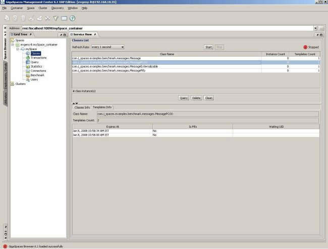
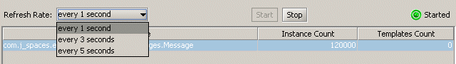

The Transactions view allows you to view all of the transactions that are currently taking place in the selected space (active transactions). This view can provide helpful information, for example, when a transaction is stuck.
The Transactions view allows you to:
View transaction details:
View the specific objects locked under the transaction – clicking on the transaction displays a table of the locked objects at the bottom of the screen which shows each object's UID, class name, operation type, and lock type.
Drill into objects locked under the transaction by double-clicking them, using the Object Inspector.
Refresh rate – every 1, 3, or 5 seconds (see below).

For details on transactions, refer to the Transaction Management section.
You can choose to refresh the transactions displayed periodically. Select the refresh rate desired from the Refresh Rate drop-down menu. To stop automatically refreshing the transactions, click the Stop button. When auto-refresh is running, a green blinking dot is displayed on the right side of the screen.
The Transactions view is dynamic:
The transaction's ID displayed at the top of the screen changes constantly. Every time the ID number changes, this means a new transaction is running. This continues until all of the transactions defined finish, then the table becomes empty. You won't be able to see each running transaction – depending on the size of the transaction, it usually takes less than a second to finish.
The number of objects locked under a transaction displayed also changes constantly. Therefore, when you click on a transaction, the number of locked objects displayed below isn't 100% accurate. For example, if the refresh rate selected is one second, the locked objects displayed in the few seconds it took to click on the transaction and view its details, are not shown below.
